8天让iOS开发者上手Flutter之六
发现了一个宝藏网址，这里讲解的 flutter实战 比我写的靠谱多了。
准备网络数据
这一步不是很重要，提供一些假数据而已，不是重点嫌麻烦的可以跳过。
先介绍一个网址：http://rap2.taobao.org/account/login 这个网址用来搭建我们需要的网络数据，注册账号非常简单，这里就不多说了。
注册完成之后，新建一个仓库，简简单单取个名字就够了：
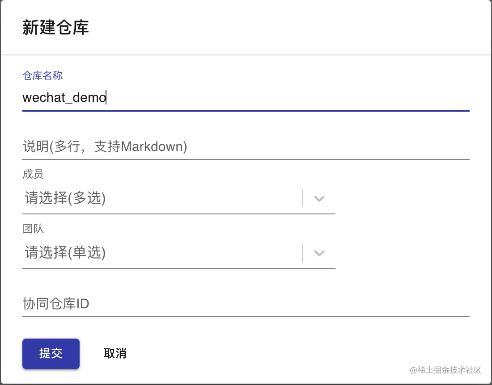
之后点击进入仓库，可以看到下图：
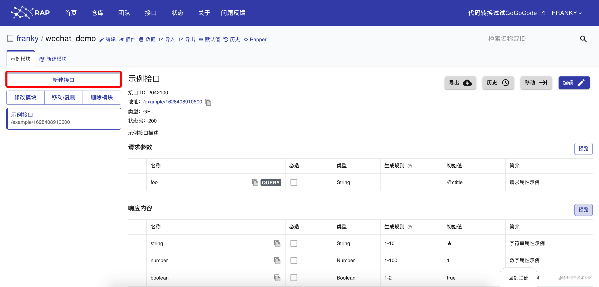
会默认生成以一个示例接口，可以看一看示例接口的生成规则。看不懂也没关系，我们直接直接上手自己新建一个接口，如图所示：
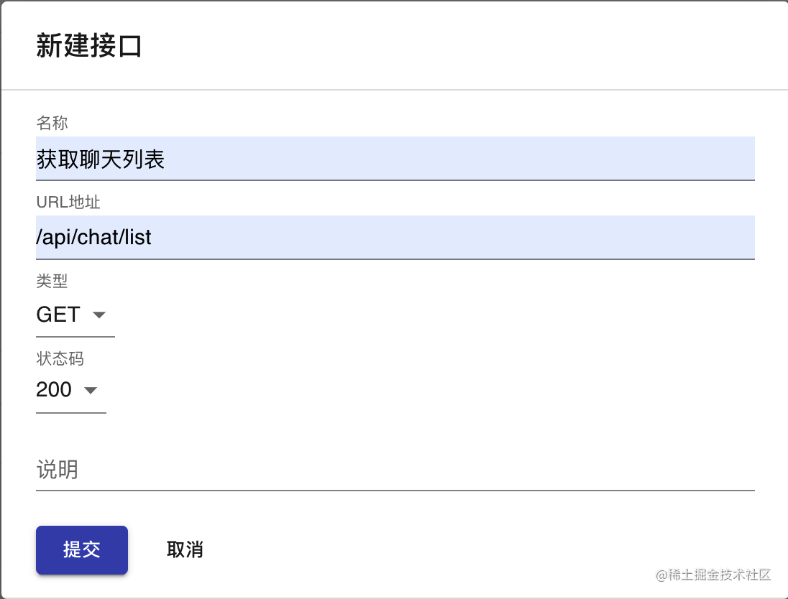
点击右上角的编辑按钮进入编辑模式，新建一个响应 chatlist，类型为 Array。然后生成 chatlist 的数据，imageUrl 表示每条聊天数据的用户头像。其中用户头像的初始值里面有一段 @natural(20,99)，这个是 Mock.js 代码。这里是相关介绍 http://mockjs.com/
每条聊天数据，除了 imageUrl 还需要有用户名 name 和消息的内容 message。@cname 用来生成随机的中文名，@cparagraph 用来生成随机的中文段落来表示聊天内容。我们这里只是简单的构造一下这个聊天列表所需要的数据，真正的聊天列表的数据肯定是不会这么简单的。。。
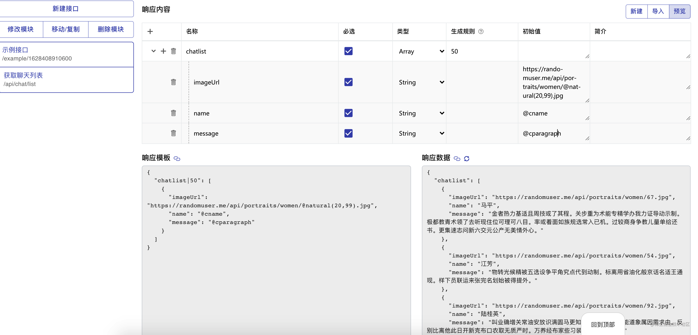
编辑的差不多的时候，记得点击保存,保存之后点击红圈中的图标就可以获取到数据
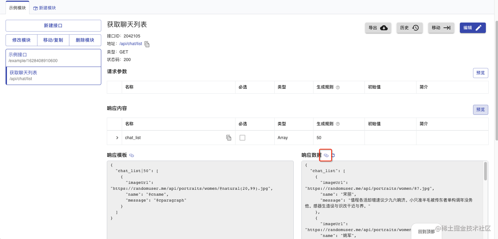
聊天页面导航条
准备工作
默认展示页面改为 _currentIndex 改为 0,新建 chat 目录，将相关文件放在这里。
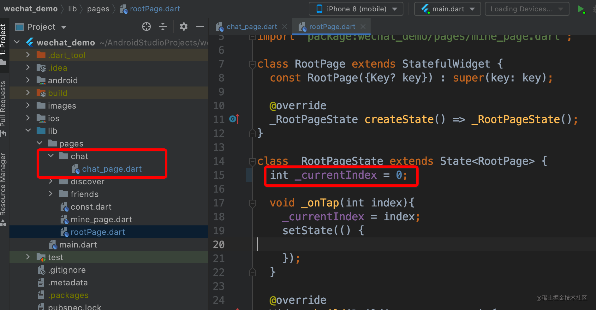
添加加号按钮
加号按钮这个东西，我们之前已经添加过类似的了，appBar 的 actions 就是我们需要添加代码的地方。
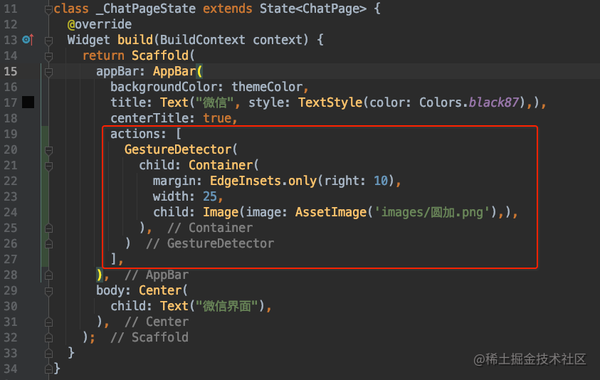
如果我们按照这个思路写下去的话，就需要自己再去实现一个弹出菜单的类。其实 flutter 提供了我们一些现成的类可以做到类似的效果。
PopupMenuButton
PopupMenuButton 类用来弹出一个菜单，必传参数为 itemBuilder，用来实现它需要展示的内容。PopupMenuItem 就是用来展示内容的类。这里有一个细节说一下，PopupMenuButton 有一个 onSelected 属性，这个属性是个闭包，意思是选中某个 PopupMenuItem 的时候，会调用这个闭包。但是有一个前提就是每个 PopupMenuItem 的 value 必须不为 null 的时候，才会执行 onSelected 闭包，我在这里卡了半天，网上找了半天资料也没有明确讲到这里。其他就没什么好讲的了，都比较简单。
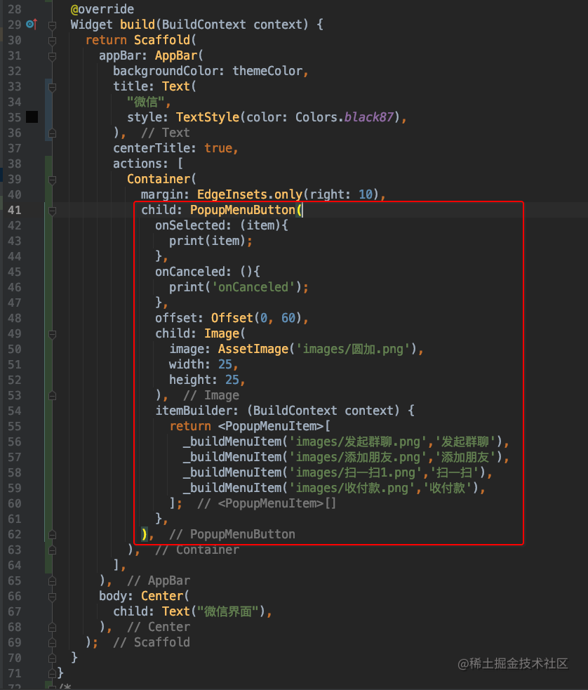
其中 _buildMenuItem 的实现如下，注意 value 要赋值就好了，不为空就行，不然 PopupMenuButton 的 onSelected 不执行：
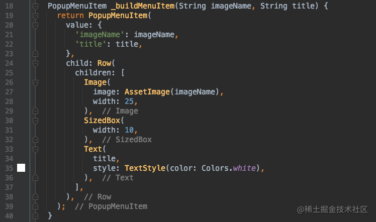
还有一个小细节，如何设置 PopupMenuButton 的颜色，可以直接设置它的颜色
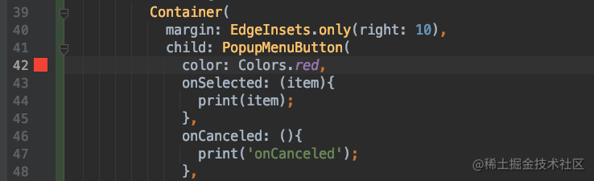
还可以设置APP的主题的 cardColor，不过这个优先级没有直接设置 PopupMenuButton 颜色高。
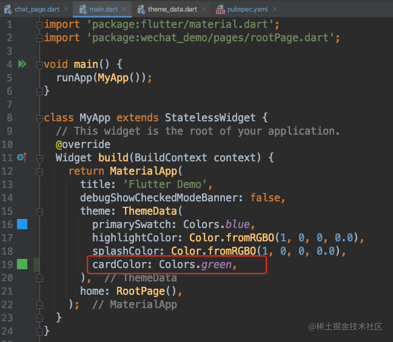
请求网络数据
https://pub.flutter-io.cn/
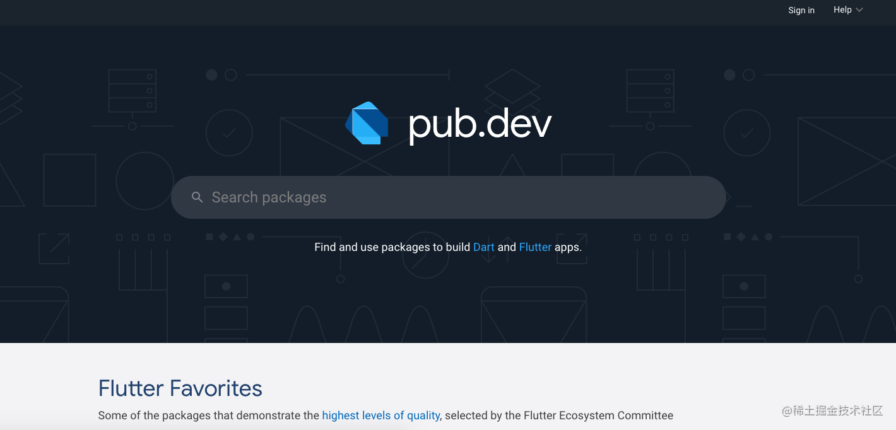
这个网站可以搜索 flutter 使用的包 packages。我们使用 http 这个包来请求我们的网络数据。这个包是 flutter 官方提供的。实际项目开发的时候可能并不会使用 http 这个包，大部分是使用 dio 来请求网络数据。这里只介绍官方的 http 包如何使用。
导入http包
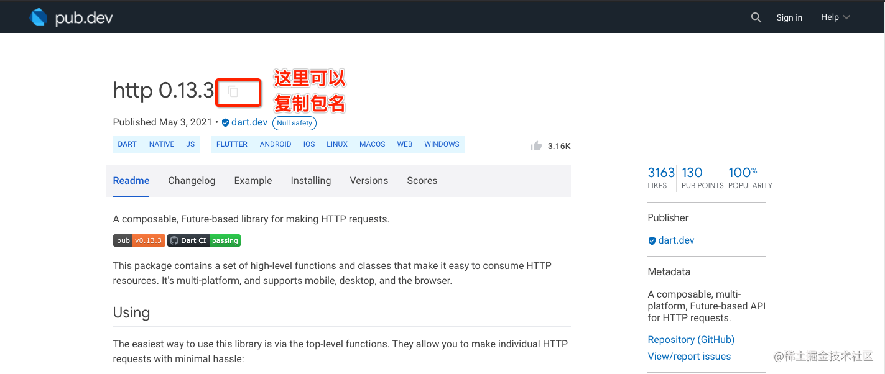
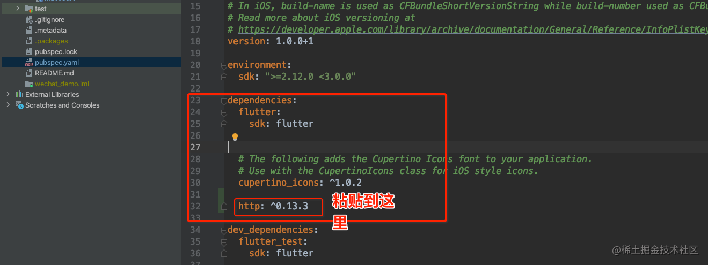
粘贴完成之后需要更新一下，就是获取一下包对应的代码。可以通过上方的 Pub get,也可以在终端中输入 flutter packages get
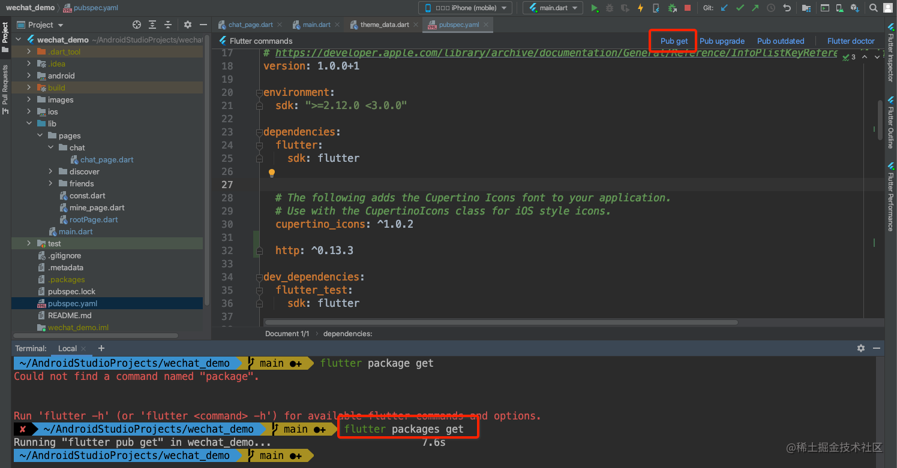
命令执行完之后，就可以使用这个包了。
导入 http 头文件并取别名
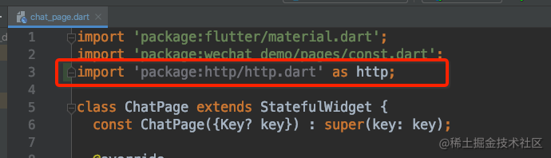
发送请求
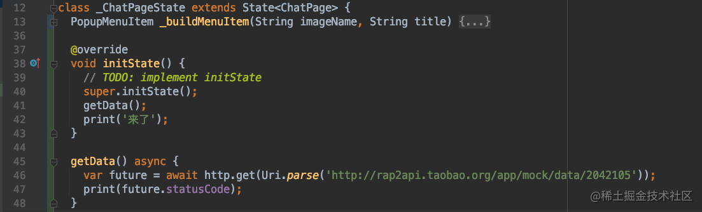
请求的发送写在 initState 里面。getData() 后面跟了一个 async 表示的是异步执行。async 需要搭配 await 使用，await 后面跟着的是耗时的代码。所以上面的程序会先打印来了，然后再输出请求的状态码；
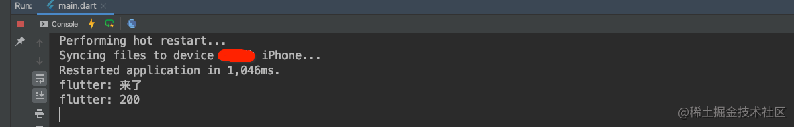
点击其他的页面，再次回到当前页面会发现 initState 方法重新走了一遍，这是因为我们还没有保存住状态，后面会讲到如何保持 Widget 的状态。
处理返回的数据
首先介绍一下，在 flutter 中如何将请求返回的 JSON 数据转为 Map，在我们 iOS 开发中是转为字典，而 flutter 中没有字典这个类型，对应的类型是 Map。以及如果将 Map 转为 JSON。在 iOS 中我们知道会使用一个 NSJSONSerialization 的类用来处理JSON数据。同样的，在 flutter 中也会有一个专门的类 JsonCodec 来处理。
JSON 和 Map 互相转
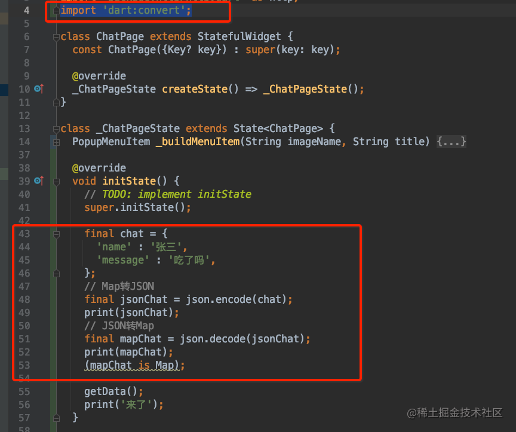
其中的 json 就是 JsonCodec 的实例。需要导入 'dart:convert' 头文件。flutter 中还可以通过 is 来判断是不是某个类型。
新建聊天模型
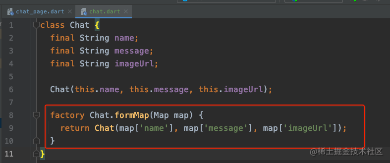
除了红框内的方法之外，其他没什么新鲜事物。红框内的方法应该说是一个工厂方法，是设计模式的一种，用来初始化对象的。除了默认的初始化方法，还可以使用这个工厂方法来实例化一个 Chat 对象。模型建立好了之后就可以处理响应的数据了
处理响应的数据
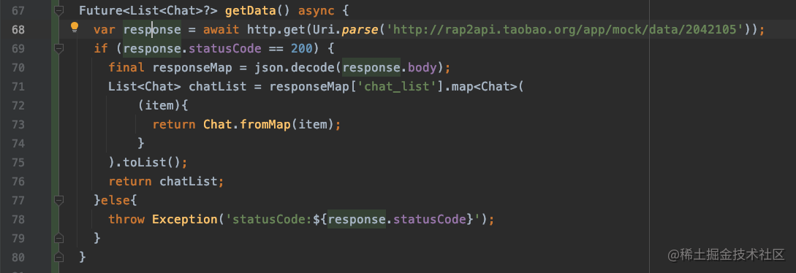
这里用到了 Future，关于 Future 的讲解可以看官方文档 https://dart.cn/tutorials/language/futures
使用 FutureBuilder 显示界面
很多时候我们会依赖一些异步数据来动态更新 UI，比如在打开一个页面时我们需要先从互联网上获取数据，在获取数据的过程中我们显示一个加载框，等获取到数据时我们再渲染页面；当然，通过 StatefulWidget 我们完全可以实现上述这些功能。
但由于在实际开发中依赖异步数据更新UI的这种场景非常常见，因此 Flutter 专门提供了 FutureBuilder 来快速实现这种功能。FutureBuilder 会依赖一个 future，它会根据所依赖的 future 的状态来动态构建自身。这个 future 我们刚刚已经准备好了。关于 FutureBuilder 的介绍 这篇文章 讲解的很详细。
最后完整代码如下：
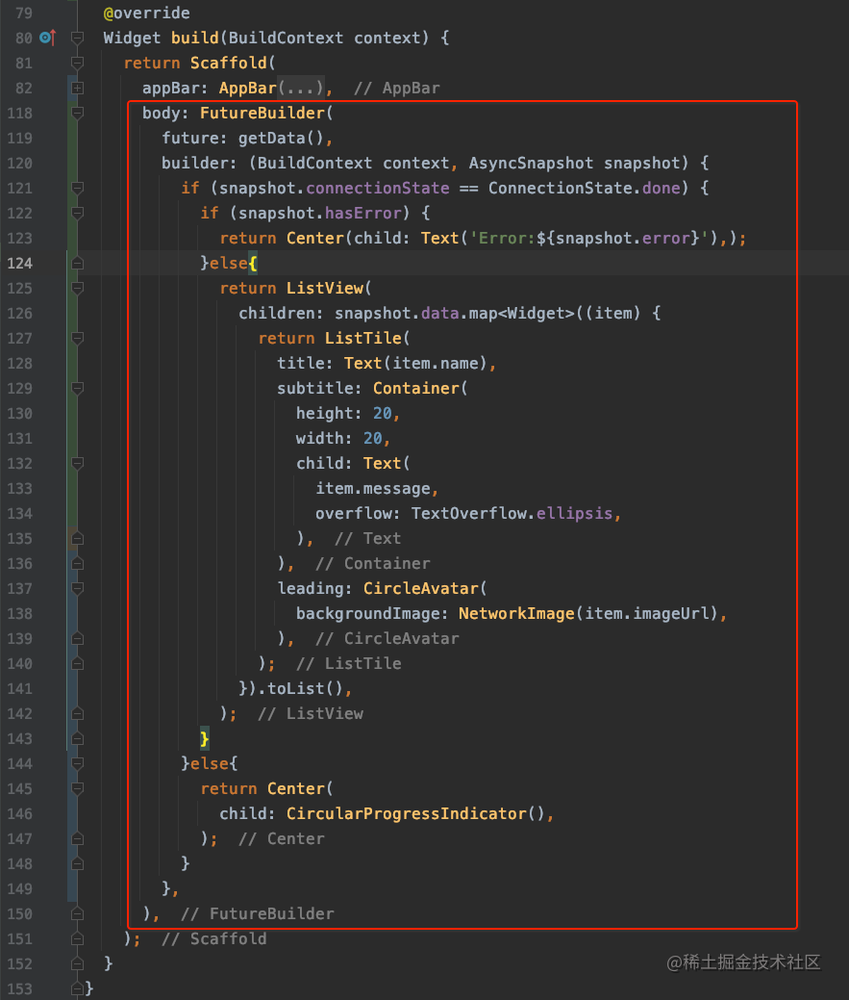
不使用 FutureBuilder 的方式
刚刚说了，我们可以使用 FutureBuilder 来快速实现展示异步网络数据，也可以自己实现，现在我们自己实现一下。使用一个私有变量 _chatList 记录请求下来的数据，再根据 _chatList 的值来展示不同的页面。代码如下：
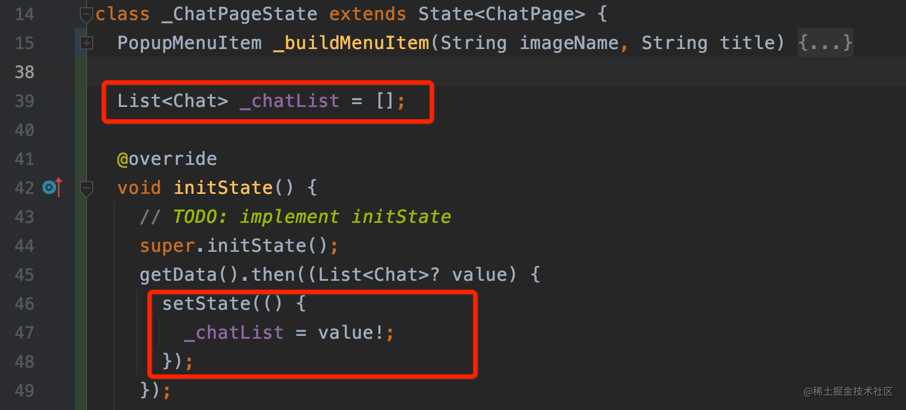
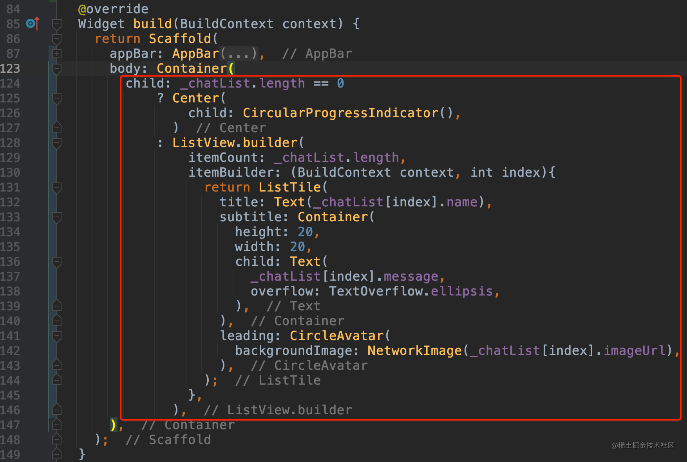
因为 getData 的返回值是 Future 的原因，getData() 后面可以跟 then 方法，还可以跟错误捕获 catchError,完成时的回调 whenComplete，超时设置 timeOut 等等，这种写法挺有意思，一路点下去就完了…
实现超时取消刷新功能
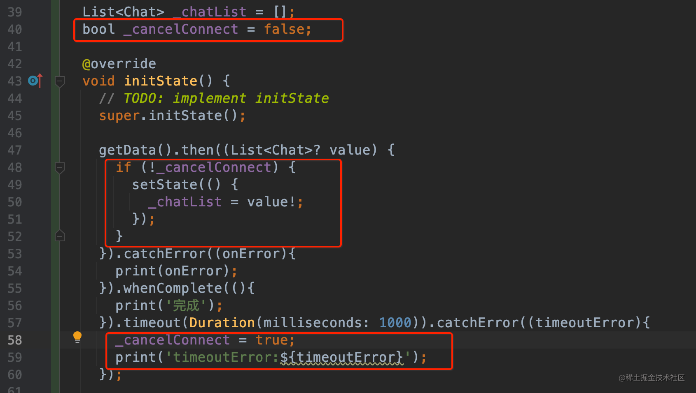
在每次请求的时候，重置 _cancelConnect 的值。
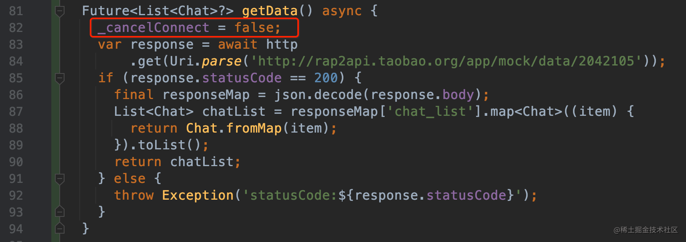
保持 Widget 的状态
我们来回点击通讯录页面和聊天页面，会发现每次点击进入当前的页面，都会重新的载入，initState() 会被重新调用。将通讯录页面滑动到底部，再次点击进入会发现又默认回到了顶部。为什么会出现这样的问题。正是因为我们的Widget的状态没有保持，每次展示都重新创建了。
Dart 语言中有一个 Mixins 的概念：官方的解释是这样，可以给类 A Mixins 一个 B，那么 A 就拥有了 B 的属性和方法。有点像 OC 的类扩展的意思。保持 Widget 的状态就需要用到这个语言特性。一共有三个步骤：
- Mixins 类
AutomaticKeepAliveClientMixin - 重写
wantKeepAlive方法 - 调用父类Builder方法
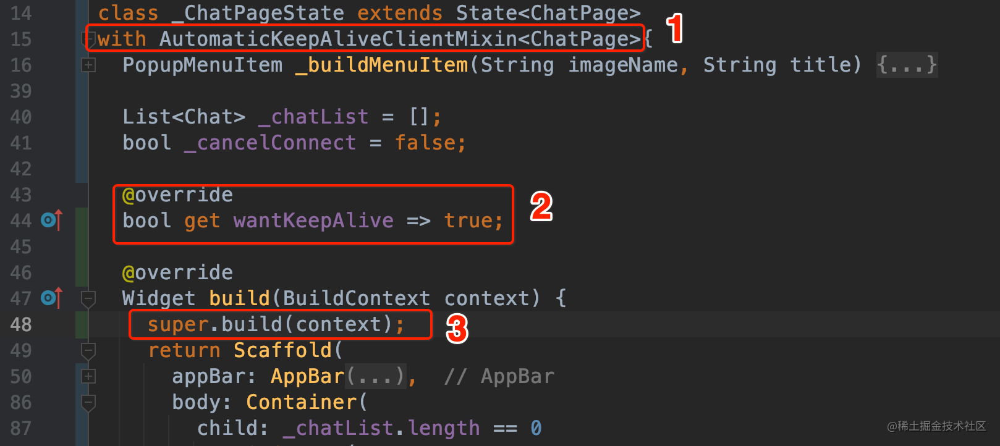
同样把通讯录页面也实现上面的步骤。然后再次来回点击发现还是没有保持住状态？？？这里有一个最大的问题就是我们的根 Widget 都没有保持住状态，那还谈什么保持子 Widget 的状态呢。。。
使用 PageView
来到 rootPage.dart 文件，我们会看到 body 里面直接取了数组的某个元素作为根 Widget 展示。这样是无法保持住状态的，使用 PageView 才可以保持住状态。
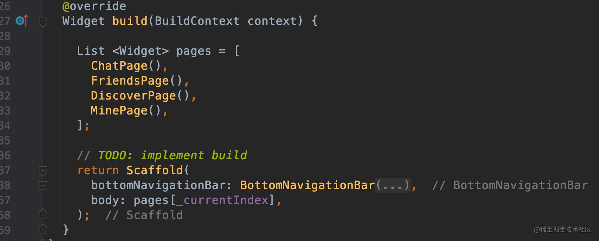
使用 PageView，代码如下：
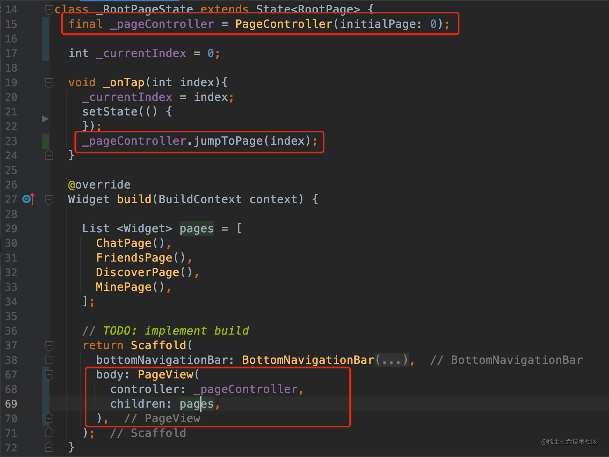
点击跳转到其他页面就可以直接通过 _pageController 来完成。使用了 PageView 之后会发现，不同的页面之间可以直接通过手势左右滑到就能切换了。这样的效果我们一般是不需要的，可以设置直接关闭。如果需要的话，在滑动的方法里面重新设置底部导航条的正确位置也是没有问题的。
使用滑动切换，解决 bug
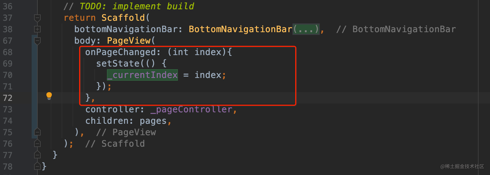
禁用滑动切换
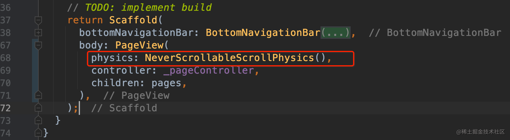